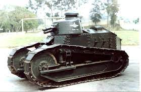
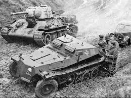
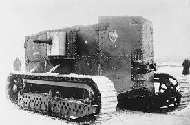
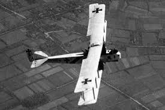
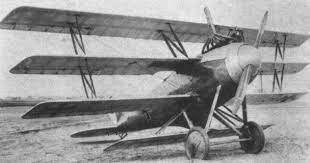
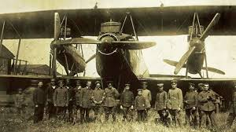
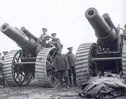
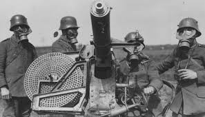
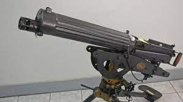

BLINDADOS



Em setembro de 1916, as tropas alemãs combatiam em Flers, na França, numa das batalhas mais sangrentas da Primeira Guerra Mundial, que deixou um saldo de mais de um milhão de soldados mortos. Durante a chamada Batalha do Somme, alemães e aliados enfrentaram-se durante semanas numa frente de combate de mais de 40 quilômetros de extensão.
Na luta por alguns metros de terreno, foram cavadas longas trincheiras, e cercas de arame farpado protegiam os soldados de ataques repentinos do inimigo. Trocas de tiros e ataques diretos alternavam-se, sem que nenhuma das partes conseguisse levar vantagem.
Na manhã do dia 15 de setembro de 1916, os alemães aguardavam os costumeiros ataques das tropas inglesas de infantaria. Para surpresa geral, no lugar de combatentes, surgiram à distância o que alguns soldados acreditaram tratar-se de tratores.
AVIÕES



No início da guerra, havia algum debate sobre a utilidade do avião no campo de batalha, Muitos oficiais experientes continuavam céticos. No entanto, as primeiras campanhas de 1914 provaram que a cavalaria não podia mais fornecer as informações de reconhecimento esperadas pelos generais, com o poder de fogo muito maior dos exércitos do século XX, e ficou claro muito rapidamente que os aviões poderiam no mínimo localizar o inimigo, mesmo que o reconhecimento aéreo inicial estivesse um tanto travado devido à novidade das novas técnicas envolvidas. O ceticismo inicial e baixa expectativa, rapidamente se tornaram em demandas não realistas, além da capacidade dos aviões primitivos disponíveis.
ARMAMENTOS



As armas da Primeira Guerra Mundial resultaram em uma matança nunca vista antes. Criadas ou modificadas pelas forjas da Revolução Industrial, as armas da Grande Guerra foram largamente utilizadas na tentativa de vencer o conflito mundial.
Crivando, despedaçando, incinerando e asfixiando… Tudo era válido para matar o máximo de inimigos em menos tempo, acreditando que a guerra acabaria rapidamente.
Metralhadoras, lança-chamas, gases venenosos, aviões e tantos outros armamentos foram postos no tabuleiro de guerra das potências imperialistas.